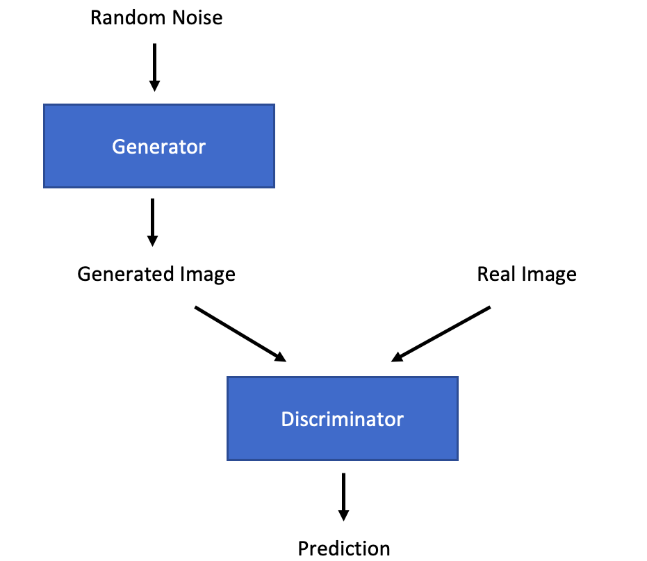

What are GANs?
Generative Adversarial Networks (GANs) were first proposed in a paper by Goodfellow et al. in 2014. They are a method for training generative models. They are most commonly used to generate images and, despite an abundance of positive applications, they are also responsible for the majority of deepfakes.
The basic premise of a GAN is to train two competing models. One model, the generator, is trained to produce a fake image, while the other model, the discriminator, is trained to be able to tell the difference between a real image and a fake one. The generator tries to produce a fake image that is good enough to trick the discriminator into thinking it is a real image. As a result, the discriminator has to get better at telling the difference between the two, which forces the generator to then improve etc.
Once training has taken place, the generator can be used by itself during inference to generate fake images.
The training process alternates between training the discriminator and the generator. Each discriminator training step involves maximising the following general equation:
(Goodfellow et al., 2014)
During this step, only the discriminator weights are updated. Then, the generator weights are updated to minimise the following general equation:
(Goodfellow et al., 2014)
The ratio between discriminator and generator update steps does not have to be 1:1, indeed in most cases it isn’t. GANs are notoriously difficult to train because they rely on a delicate balancing act between overtraining and undertraining the discriminator in relation to the generator. If the discriminator becomes too good then the generator finds it impossible to beat the discriminator. As a result, gradients tend to drop to zero and the model stops training. If the generator becomes too good then it tends to exploit local minima and will likely always produce the same image.
The GAN method is not tied to a particular model architecture, indeed many have been used. However, some recommendations for model architecture were made in this paper by Radford et al. in 2015 to improve GANs and make them easier to train. These included: using only convolutions and not pooling layers, using ReLU in the generator and leaky ReLU in the discriminator, using batchnorm and not using any linear layers. However, many training difficulties still remained and the WGAN paper was largely an attempt to overcome these training difficulties.
Wasserstein GANs
Wasserstein GANs (WGANs) were introduced in this paper by Arjovsky et al. in 2017. They significantly reduced the difficulties associated with training GANs as the training process no longer had to walk a tightrope between over and under training the discriminator because, in a WGAN, the discriminator cannot be over trained.
The difference between a WGAN and a GAN is simply the loss function that is used to train both the discriminator and the generator. In most other GANs, Cross Entropy Loss is typically used as a loss function (this blog post discusses Cross Entropy Loss amongst other loss functions). When two distributions (target and predicted) are almost entirely separate and do not overlap then the gradients in many places will go to zero or infinity, essentially preventing the model from training. The WGAN paper proposed a new loss function based on the Earth-mover Distance.
If two distributions are taken, then the Earth-mover Distance is calculated by working out the minimum cost of turning one distribution into the other. The cost is calculated by multiplying the ‘size’ of the probability by the ‘distance’ it has to move. For example: if the probability that x=1 is 1 in distribution A and the probabilities that x=1 and x=2 are both 0.5 in distribution B then the Earth-mover Distance is 1 x 0.5 = 0.5 because a probability of 0.5 must be moved a distance of 1 to map onto the new distribution.
The huge advantage of using this loss function is that it is differentiable everywhere, even if the distributions are completely separate. As a result, a WGAN will continue to train even if the discriminator is over trained.
As you can imagine, for two smooth distributions over a multi-dimensional space it becomes an intractable problem to find the minimum cost. As a result, simplifications have to be made. It has been shown that, if the function is Lipschitz continuous, then the loss function can be expressed as follows:
(Arjovsky et al., 2017)
Lipschitz continuous refers to a function where the magnitude of the gradient at any point on the curve never exceeds a specified integer. Because this cannot be guaranteed it must be enforced. The authors of the WGAN paper proposed ‘gradient clipping’ as a method to enforce this. This involved clipping any gradients that exceeded + or – k, where k is a given integer. This led to the WGAN learning very simplistic functions because the gradients end up concentrated around +/- k. This was improved with the introduction of WGAN-GP.
Wasserstein GAN Gradient Penalty
Wasserstein GAN with Gradient Penalty (WGAN-GP) was introduced in this paper by Gulrajani et al. in 2017. The authors exploited another feature of Lipschitz functions: the gradients of the discriminator should have a norm of 1 almost everywhere. Whilst ideally the gradients of all points would have a norm of 1, the authors focused on the series of points lying on a straight line between the predicted and the target value in order to make the solution feasible.
WGAN-GP therefore removes gradient clipping entirely and, instead, introduces a gradient penalty factor into the loss function of the discriminator update step:
(Gulrajani et al., 2017)
A random point is sampled between the predicted and target vectors. The gradient norm of this point is then calculated and encouraged to equal 1.
Summary
Wasserstein GANs, in particular with Gradient Penalty, have led to much more stable training procedures for GANs. GANs still take a long time to converge, a reflection of the fact that image generation and other similar tasks are simply very difficult tasks to learn, but at least models are able to train more reliably and not get stuck.
To see a WGAN-GP model implemented in PyTorch and check out the code, head over to my Github page where I built a simple WGAN-GP model to create MNIST digits.